How the studio grew that audience in seven months, channel by channel and phase by phase, and what we can reuse.
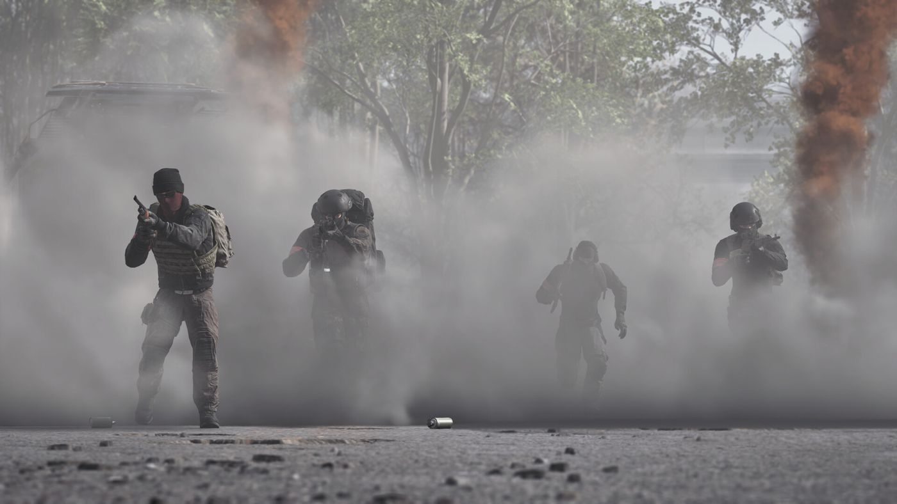
What each channel did in each phase, from the reveal to after launch. M = months and D = days before launch (Sep 10). On a phone, swipe the grid sideways.
Worked
Ranking: our call, by size of the public result. Tap an item to jump to its chapter. proposal
Orange: Steam wishlists. Black: copies sold. Numbered circles: the moves listed under the chart. Hover a circle or a point for details.
Worked
Didn't work
Black line: members. Grey bars: new members per day. Numbered bands: the seven stages. Hover or tap a stage to see what the studio did.
Worked
Didn't work
Sources: member counts from Wayback captures of the invite page, studio posts and the Discord invite API (Oct 7); stage rates are averages between two counts. Details in research/discord_growth.md.
Every post in #wardogs-announcements, from the reveal to Oct 3.
One bar per post. Numbered pins mark the big moments. Hover a bar or a pin to read the post.
| Type | Posts | Avg | Mood |
|---|
Mood bar: cheering, mocking, other. Types are a manual read of each post estimate
Flag reactions summed across posts. A rough proxy for where players are estimate
Four real screens, in the order a player saw them. Click one to enlarge.
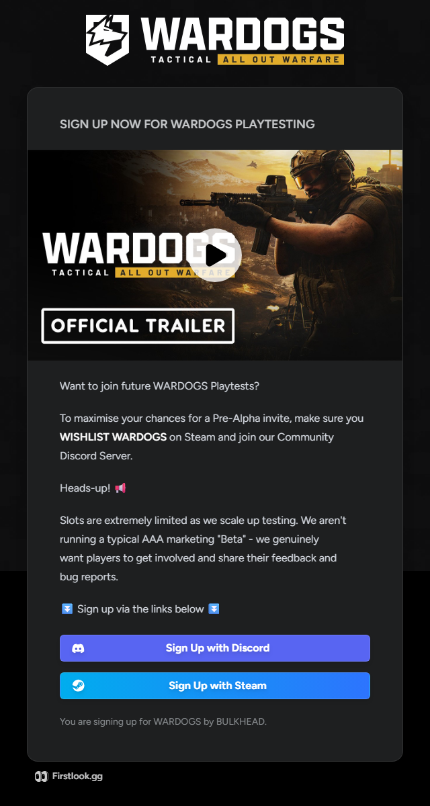
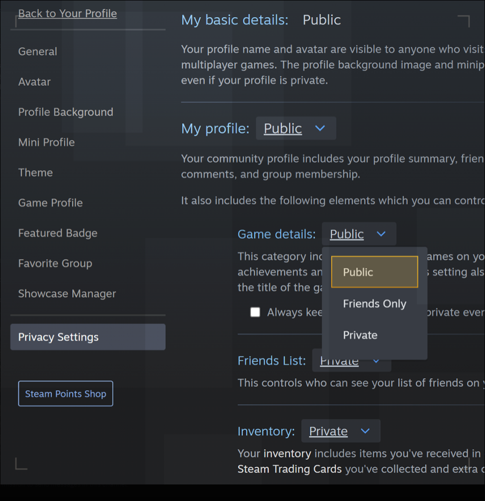
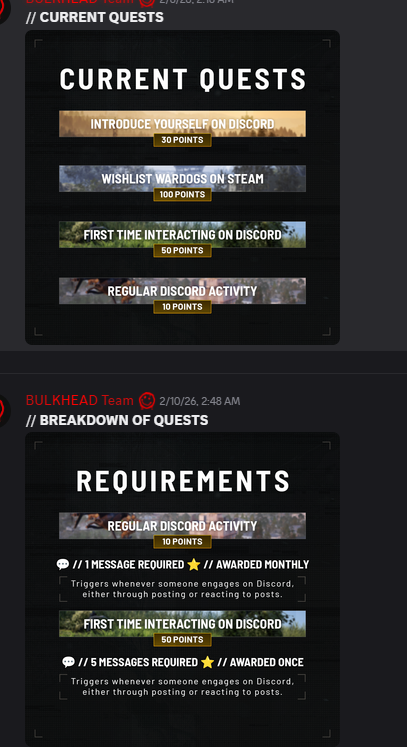
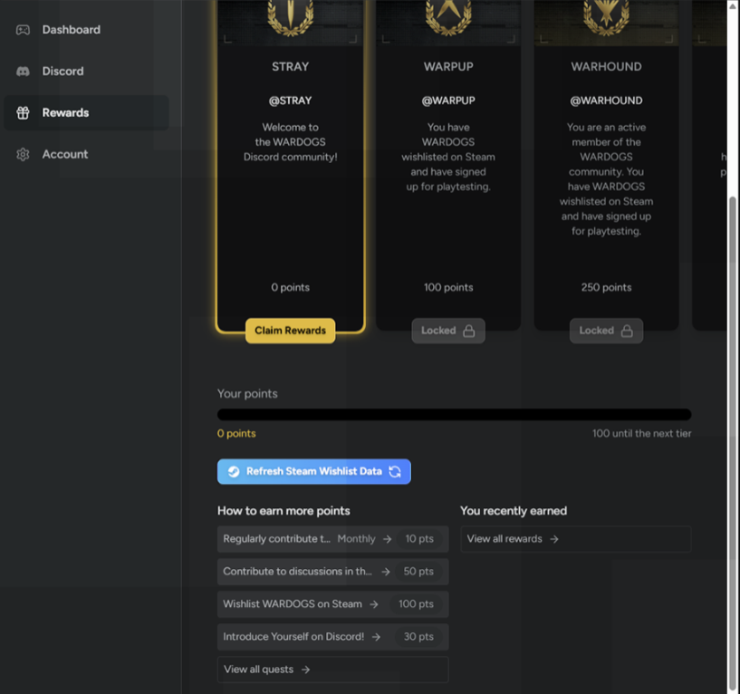
Ranks on the FirstLook Rewards tab (website, not in the game). Each one gives a Discord role
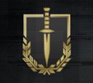
@STRAY0 pointsJoined the Discord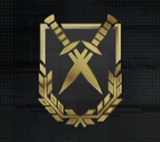
@WARPUP100 pointsWishlisted and signed up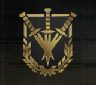
@WARHOUND250 pointsActive in the Discord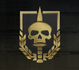
Tester role@WARDOG1,000 pointsCard: "You have been granted playtesting access"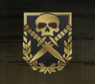
@WARBEAST5,000 pointsReported bugsThe studio picked testers from the sign-up list. Points earned Discord badges on the side.
Quest points against the 1,000 WARDOG needs
Who got picked, test by test
What the studio gets
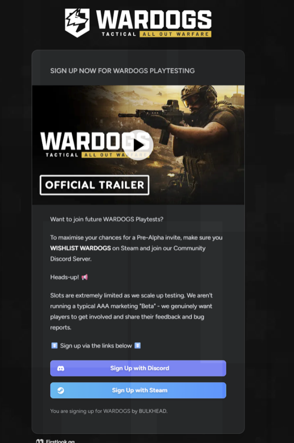
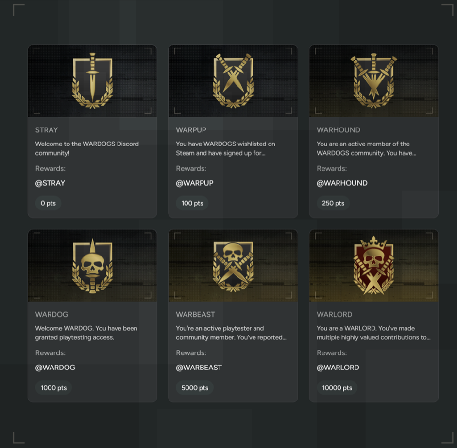
| Action | Checked by | Points |
|---|---|---|
| Wishlist WARDOGS on Steamonce | Steam API | 100 |
| First time interactingfive messages or reactions, once | Discord bot | 50 |
| Introduce yourselffirst post in the intro channel, once | Discord bot | 30 |
| Regular Discord activityone message or reaction, every month | Discord bot | 10 |
| Bug reports, valued contributionsnamed in the top two rank texts | Studio, by hand | not stated |
Wishlisting pays more than all three Discord quests in month one. Values from the Feb 2026 quest board.
| Rank | Reachable with the four quests? | How you actually get it |
|---|---|---|
| STRAY 0 | Yes | Join the Discord |
| WARPUP 100 | Yes | The wishlist alone |
| WARHOUND 250 | Yes, after six months | 190 once, then the monthly 10 |
| WARDOG 1,000 | No | Card text: "You have been granted playtesting access." Given when the studio picks you as a tester estimate |
| WARBEAST 5,000 | No | Card text: "active playtester ... You've reported". Bug reports, judged by the studio estimate |
| WARLORD 10,000 | No | Card text: "multiple highly valued contributions". Studio's call estimate |
Two systems in one. Small quests move everyone to WARHOUND; the studio hands out the top three ranks by hand.
Invite only at first, open to everyone five days before launch. Click a picture to enlarge.
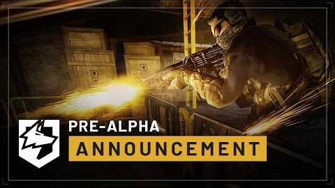
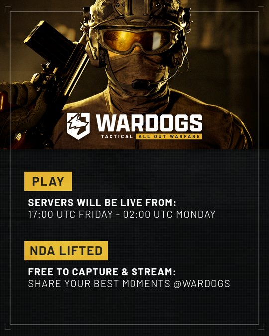
Big fat server queue is on purpose, need to make sure it works.The studio in Discord, Sep 2
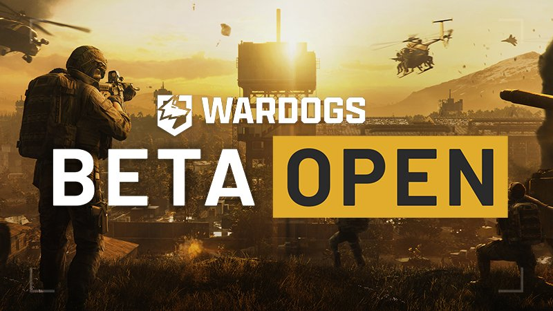
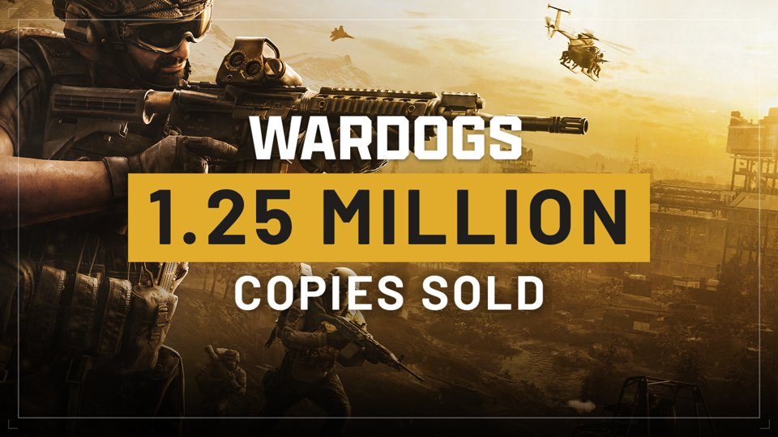
Running total: everyone invited so far, counted at the end of each month. The orange number under each month is how many were new that month. Bars use a 10x scale: each step up is ten times more people.
Every invite wave we could date
What to learn
Sources: Steam news posts, the studio's Discord announcements (Feb 5 to Oct 3), r/WarDogs read through the Arctic Shift archive (about 10,600 comments), SteamDB, PC Gamer, Inven, mein-mmo. Player reports are marked as such. Details in research/test_stages.md and prealpha_estimate.md.
Worked
Didn't work
Testers could post video from Aug 11 and stream from Beta 1, 20 days before launch. NDA = the test rules testers signed: what they could not show in public.
Worked
Didn't work
Sources: the studio's Discord posts (Jun 2, Jun 7, Jul 23, Aug 30), Steam posts (Aug 11, Aug 20), research/test_stages.md, Streams Charts (Sep 15), MeinMMO, PCGamesN.
All on the studio's own channel, BULKHEAD: 98.7k subscribers.
Not an extraction shooter. Not a BR. Me: SOLDAnnouncement Trailer, 4,700 likes
"NOT BATTLE ROYALE" Yes! "NOT EXTRACTION SHOOTER!" YES!Gameplay Trailer, 3,200 likes
It's so refreshing just to have a dev team just be real with the communityAddressing Feedback, 1,800 likes
Saying "Wardogs isn't a game for everyone" is honestly really refreshing.Early Access & Beyond, 1,200 likes
Devs: 10 Reasons NOT to Buy. Me: Bought in 10 seconds10 Reasons NOT to Buy, 4,100 likes
"the virgins who buy from cheat developers" LOL I love these guysThe #1 Rule of Anti-Cheat, 7,000 likes
KEEP THE PLAYTEST OPEN! LET US INNNNNNNN!Beta Recap & Next Steps, 2,500 likes
Game doesn't need more marketing. Use that 100k to pay devs to improve the game more.The $100K Clip Contest, 298 likes
Groupings are ours. Dislikes are estimates from the Return YouTube Dislike extension, since YouTube hides them.
Worked
Didn't land
Sales reached 3M by Sep 26 while reviews turned.
Sources: Steam review histogram (daily, English-language reviews) and Steam Charts daily peaks, pulled Oct 7. Season 02 arrives Oct 15.
The WARDOGS moves that worked, put in order, with the timing they used. Shift the timings to our own launch date. proposal
| Number | Where it comes from | Trust |
|---|---|---|
| 3M copiessold by Sep 26 | Studio post on Steam, repeated by press | Medium |
| 1M wishlistsby Aug 14 | Studio post on Steam | Medium |
| 500k playersin Beta 1 | Game director, quoted by PC Gamer | Medium |
| 403k playersat once, Sep 20 | Steam Charts (SteamDB says 429k) | High |
| 476k membersin the Discord, Oct 7 | Discord invite API; earlier counts from Wayback captures | High |
| 75.6% positiveSteam reviews overall, Sep 30 (84% on Sep 21) | Steam store reviews summary | High |
| 16k playersat once, Closed Alpha | A German site citing Steam Charts | Low |
| 5.5k testersin the pre-alpha by June | Our estimate from Discord, Reddit and press | Low |
| 98% likeson a typical studio video | Dislikes estimated by a browser extension | Low |
| 100 pointsfor one wishlist | Discord screenshots, Feb 2026 | Medium |